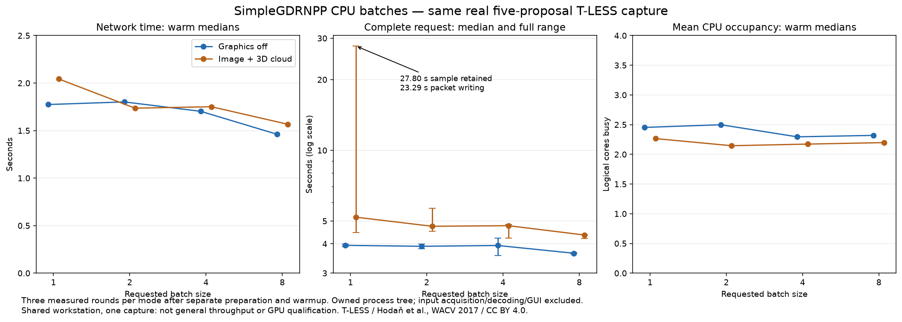

32 frozen real cases, 192 comparisons, zero accept/reject changes. Differences are against single-instance execution, not ground-truth pose error. Tiny field/fit differences remain; no bit-identity claim. Default batch size stays one.
Network API grouping uses original and reversed crop order. Depth replay remains on each crop's own camera/frame. Actual complete-worker timing uses five proposals from one real RGB-D capture. Three measured rounds, separate warmup/preparation; all samples and the 27.80-second outlier are retained. No general capacity, detector, new-object-training or picking qualification.
T-LESS / T. Hodaň et al. / WACV 2017 / CC BY 4.0. Derived batches, numeric reports and charts are modifications. Full numerical receipt · Corrected process-tree samples · First pass, CPU/memory invalid

| Case (open full depth report) | Batch | Order | Depth result | Pose delta mm | Pose delta ° | Support delta pp | Decision |
|---|---|---|---|---|---|---|---|
| original_frame3 | 2 | frozen | rejected | 0.00000040 | 0.00000019 | +0.0000000 | same |
| original_frame13 | 2 | frozen | accepted | 0.00000050 | 0.00000095 | +0.0000000 | same |
| original_wrong_object | 2 | frozen | rejected | 0.00003634 | 0.00001518 | +0.0000000 | same |
| scene000006_frame000002 | 2 | frozen | accepted | 0.00000026 | 0.00000026 | +0.0000000 | same |
| scene000006_frame000045 | 2 | frozen | accepted | 0.00000284 | 0.00000262 | +0.0000000 | same |
| scene000006_frame000096 | 2 | frozen | accepted | 0.00000018 | 0.00000037 | +0.0000000 | same |
| scene000006_frame000139 | 2 | frozen | accepted | 0.00000012 | 0.00000004 | +0.0000000 | same |
| scene000006_frame000206 | 2 | frozen | accepted | 0.00000002 | 0.00000008 | +0.0000000 | same |
| scene000006_frame000273 | 2 | frozen | accepted | 0.00000010 | 0.00000011 | +0.0000000 | same |
| scene000006_frame000329 | 2 | frozen | accepted | 0.00000002 | 0.00000007 | +0.0000000 | same |
| scene000006_frame000388 | 2 | frozen | accepted | 0.00000005 | 0.00000035 | +0.0000000 | same |
| scene000006_frame000409 | 2 | frozen | rejected | 0.00000221 | 0.00000191 | +0.0000000 | same |
| scene000006_frame000462 | 2 | frozen | rejected | 0.00000347 | 0.00000846 | +0.0000000 | same |
| scene000006_frame000496 | 2 | frozen | accepted | 0.00000028 | 0.00000046 | +0.0000000 | same |
| scene000006_frame000501 | 2 | frozen | rejected | 0.00000141 | 0.00001037 | +0.0000000 | same |
| scene000001_frame000001 | 2 | frozen | rejected | 0.00007849 | 0.00000558 | +0.0000000 | same |
| scene000004_frame000000 | 2 | frozen | rejected | 0.00007106 | 0.00001697 | +0.0098222 | same |
| scene000005_frame000007 | 2 | frozen | rejected | 0.00017051 | 0.00020699 | +0.0000000 | same |
| scene000007_frame000003 | 2 | frozen | rejected | 0.00009909 | 0.00008711 | +0.0000000 | same |
| scene000008_frame000001 | 2 | frozen | rejected | 0.00001356 | 0.00001725 | +0.0000000 | same |
| scene000009_frame000000 | 2 | frozen | rejected | 0.00009446 | 0.00004103 | +0.0000000 | same |
| scene000010_frame000005 | 2 | frozen | rejected | 0.00000972 | 0.00007609 | +0.0000000 | same |
| scene000011_frame000004 | 2 | frozen | rejected | 0.00000046 | 0.00000464 | +0.0000000 | same |
| scene000012_frame000002 | 2 | frozen | rejected | 0.00000200 | 0.00002558 | +0.0000000 | same |
| scene000013_frame000002 | 2 | frozen | rejected | 0.00000761 | 0.00002808 | +0.0000000 | same |
| scene000014_frame000002 | 2 | frozen | rejected | 0.00008377 | 0.00002533 | +0.0000000 | same |
| scene000015_frame000001 | 2 | frozen | rejected | 0.00006600 | 0.00003524 | +0.0000000 | same |
| scene000016_frame000008 | 2 | frozen | rejected | 0.00015690 | 0.00001107 | +0.0000000 | same |
| scene000017_frame000003 | 2 | frozen | rejected | 0.00000478 | 0.00001617 | +0.0000000 | same |
| scene000018_frame000002 | 2 | frozen | rejected | 0.00009611 | 0.00010783 | +0.0000000 | same |
| scene000019_frame000001 | 2 | frozen | rejected | 0.00000483 | 0.00000945 | +0.0000000 | same |
| scene000020_frame000003 | 2 | frozen | rejected | 0.00014086 | 0.00002308 | +0.0000000 | same |
| original_frame3 | 4 | frozen | rejected | 0.00000043 | 0.00000038 | +0.0000000 | same |
| original_frame13 | 4 | frozen | accepted | 0.00000028 | 0.00000150 | +0.0000000 | same |
| original_wrong_object | 4 | frozen | rejected | 0.00000891 | 0.00002883 | +0.0000000 | same |
| scene000006_frame000002 | 4 | frozen | accepted | 0.00000055 | 0.00000056 | +0.0000000 | same |
| scene000006_frame000045 | 4 | frozen | accepted | 0.00000272 | 0.00000412 | +0.0000000 | same |
| scene000006_frame000096 | 4 | frozen | accepted | 0.00000022 | 0.00000028 | +0.0000000 | same |
| scene000006_frame000139 | 4 | frozen | accepted | 0.00000005 | 0.00000009 | +0.0000000 | same |
| scene000006_frame000206 | 4 | frozen | accepted | 0.00000010 | 0.00000008 | +0.0000000 | same |
| scene000006_frame000273 | 4 | frozen | accepted | 0.00000004 | 0.00000009 | +0.0000000 | same |
| scene000006_frame000329 | 4 | frozen | accepted | 0.00000005 | 0.00000010 | +0.0000000 | same |
| scene000006_frame000388 | 4 | frozen | accepted | 0.00000020 | 0.00000035 | +0.0000000 | same |
| scene000006_frame000409 | 4 | frozen | rejected | 0.00000274 | 0.00000674 | +0.0000000 | same |
| scene000006_frame000462 | 4 | frozen | rejected | 0.00007365 | 0.00000267 | +0.0000000 | same |
| scene000006_frame000496 | 4 | frozen | accepted | 0.00000073 | 0.00000016 | +0.0000000 | same |
| scene000006_frame000501 | 4 | frozen | rejected | 0.00000136 | 0.00000546 | +0.0000000 | same |
| scene000001_frame000001 | 4 | frozen | rejected | 0.00000406 | 0.00006877 | +0.0000000 | same |
| scene000004_frame000000 | 4 | frozen | rejected | 0.00000308 | 0.00000591 | +0.0000000 | same |
| scene000005_frame000007 | 4 | frozen | rejected | 0.00008496 | 0.00020729 | +0.0000000 | same |
| scene000007_frame000003 | 4 | frozen | rejected | 0.00000471 | 0.00007545 | +0.0000000 | same |
| scene000008_frame000001 | 4 | frozen | rejected | 0.00009209 | 0.00001527 | +0.0000000 | same |
| scene000009_frame000000 | 4 | frozen | rejected | 0.00009444 | 0.00016914 | +0.0000000 | same |
| scene000010_frame000005 | 4 | frozen | rejected | 0.00000938 | 0.00008870 | +0.0000000 | same |
| scene000011_frame000004 | 4 | frozen | rejected | 0.00000059 | 0.00000027 | +0.0000000 | same |
| scene000012_frame000002 | 4 | frozen | rejected | 0.00000352 | 0.00006036 | +0.0000000 | same |
| scene000013_frame000002 | 4 | frozen | rejected | 0.00009481 | 0.00005927 | +0.0000000 | same |
| scene000014_frame000002 | 4 | frozen | rejected | 0.00000552 | 0.00001070 | +0.0000000 | same |
| scene000015_frame000001 | 4 | frozen | rejected | 0.00000732 | 0.00000806 | +0.0000000 | same |
| scene000016_frame000008 | 4 | frozen | rejected | 0.00015679 | 0.00001472 | +0.0000000 | same |
| scene000017_frame000003 | 4 | frozen | rejected | 0.00012708 | 0.00002024 | +0.0000000 | same |
| scene000018_frame000002 | 4 | frozen | rejected | 0.00028751 | 0.00008615 | +0.0000000 | same |
| scene000019_frame000001 | 4 | frozen | rejected | 0.00007076 | 0.00003547 | +0.0000000 | same |
| scene000020_frame000003 | 4 | frozen | rejected | 0.00014101 | 0.00011113 | +0.0000000 | same |
| original_frame3 | 8 | frozen | rejected | 0.00000028 | 0.00000009 | +0.0000000 | same |
| original_frame13 | 8 | frozen | accepted | 0.00000043 | 0.00000093 | +0.0000000 | same |
| original_wrong_object | 8 | frozen | rejected | 0.00003544 | 0.00002970 | +0.0000000 | same |
| scene000006_frame000002 | 8 | frozen | accepted | 0.00000026 | 0.00000011 | +0.0000000 | same |
| scene000006_frame000045 | 8 | frozen | accepted | 0.00000233 | 0.00000329 | +0.0000000 | same |
| scene000006_frame000096 | 8 | frozen | accepted | 0.00000021 | 0.00000038 | +0.0000000 | same |
| scene000006_frame000139 | 8 | frozen | accepted | 0.00000013 | 0.00000014 | +0.0000000 | same |
| scene000006_frame000206 | 8 | frozen | accepted | 0.00000002 | 0.00000013 | +0.0000000 | same |
| scene000006_frame000273 | 8 | frozen | accepted | 0.00000011 | 0.00000017 | +0.0000000 | same |
| scene000006_frame000329 | 8 | frozen | accepted | 0.00000002 | 0.00000011 | +0.0000000 | same |
| scene000006_frame000388 | 8 | frozen | accepted | 0.00000018 | 0.00000023 | +0.0000000 | same |
| scene000006_frame000409 | 8 | frozen | rejected | 0.00000182 | 0.00000112 | +0.0000000 | same |
| scene000006_frame000462 | 8 | frozen | rejected | 0.00007340 | 0.00000493 | +0.0000000 | same |
| scene000006_frame000496 | 8 | frozen | accepted | 0.00000005 | 0.00000202 | +0.0000000 | same |
| scene000006_frame000501 | 8 | frozen | rejected | 0.00000266 | 0.00002140 | +0.0000000 | same |
| scene000001_frame000001 | 8 | frozen | rejected | 0.00015758 | 0.00006207 | +0.0000000 | same |
| scene000004_frame000000 | 8 | frozen | rejected | 0.00000543 | 0.00000306 | +0.0000000 | same |
| scene000005_frame000007 | 8 | frozen | rejected | 0.00008513 | 0.00014749 | +0.0000000 | same |
| scene000007_frame000003 | 8 | frozen | rejected | 0.00019825 | 0.00004096 | +0.0000000 | same |
| scene000008_frame000001 | 8 | frozen | rejected | 0.00001356 | 0.00001326 | +0.0000000 | same |
| scene000009_frame000000 | 8 | frozen | rejected | 0.00000527 | 0.00039337 | +0.0000000 | same |
| scene000010_frame000005 | 8 | frozen | rejected | 0.00000938 | 0.00014501 | +0.0000000 | same |
| scene000011_frame000004 | 8 | frozen | rejected | 0.00000035 | 0.00000063 | +0.0000000 | same |
| scene000012_frame000002 | 8 | frozen | rejected | 0.00000248 | 0.00007288 | +0.0000000 | same |
| scene000013_frame000002 | 8 | frozen | rejected | 0.00009442 | 0.00007375 | +0.0000000 | same |
| scene000014_frame000002 | 8 | frozen | rejected | 0.00008377 | 0.00000917 | +0.0000000 | same |
| scene000015_frame000001 | 8 | frozen | rejected | 0.00001105 | 0.00001524 | +0.0000000 | same |
| scene000016_frame000008 | 8 | frozen | rejected | 0.00015563 | 0.00002210 | +0.0000000 | same |
| scene000017_frame000003 | 8 | frozen | rejected | 0.00012704 | 0.00002385 | +0.0000000 | same |
| scene000018_frame000002 | 8 | frozen | rejected | 0.00028724 | 0.00025405 | +0.0000000 | same |
| scene000019_frame000001 | 8 | frozen | rejected | 0.00007148 | 0.00002294 | +0.0000000 | same |
| scene000020_frame000003 | 8 | frozen | rejected | 0.00028168 | 0.00014114 | +0.0000000 | same |
| original_frame3 | 2 | reversed | rejected | 0.00000040 | 0.00000019 | +0.0000000 | same |
| original_frame13 | 2 | reversed | accepted | 0.00000050 | 0.00000095 | +0.0000000 | same |
| original_wrong_object | 2 | reversed | rejected | 0.00003634 | 0.00001518 | +0.0000000 | same |
| scene000006_frame000002 | 2 | reversed | accepted | 0.00000026 | 0.00000026 | +0.0000000 | same |
| scene000006_frame000045 | 2 | reversed | accepted | 0.00000284 | 0.00000262 | +0.0000000 | same |
| scene000006_frame000096 | 2 | reversed | accepted | 0.00000018 | 0.00000037 | +0.0000000 | same |
| scene000006_frame000139 | 2 | reversed | accepted | 0.00000012 | 0.00000004 | +0.0000000 | same |
| scene000006_frame000206 | 2 | reversed | accepted | 0.00000002 | 0.00000008 | +0.0000000 | same |
| scene000006_frame000273 | 2 | reversed | accepted | 0.00000010 | 0.00000011 | +0.0000000 | same |
| scene000006_frame000329 | 2 | reversed | accepted | 0.00000002 | 0.00000007 | +0.0000000 | same |
| scene000006_frame000388 | 2 | reversed | accepted | 0.00000005 | 0.00000035 | +0.0000000 | same |
| scene000006_frame000409 | 2 | reversed | rejected | 0.00000221 | 0.00000191 | +0.0000000 | same |
| scene000006_frame000462 | 2 | reversed | rejected | 0.00000347 | 0.00000846 | +0.0000000 | same |
| scene000006_frame000496 | 2 | reversed | accepted | 0.00000028 | 0.00000046 | +0.0000000 | same |
| scene000006_frame000501 | 2 | reversed | rejected | 0.00000141 | 0.00001037 | +0.0000000 | same |
| scene000001_frame000001 | 2 | reversed | rejected | 0.00007849 | 0.00000558 | +0.0000000 | same |
| scene000004_frame000000 | 2 | reversed | rejected | 0.00007106 | 0.00001697 | +0.0098222 | same |
| scene000005_frame000007 | 2 | reversed | rejected | 0.00017051 | 0.00020699 | +0.0000000 | same |
| scene000007_frame000003 | 2 | reversed | rejected | 0.00009909 | 0.00008711 | +0.0000000 | same |
| scene000008_frame000001 | 2 | reversed | rejected | 0.00001356 | 0.00001725 | +0.0000000 | same |
| scene000009_frame000000 | 2 | reversed | rejected | 0.00009446 | 0.00004103 | +0.0000000 | same |
| scene000010_frame000005 | 2 | reversed | rejected | 0.00000972 | 0.00007609 | +0.0000000 | same |
| scene000011_frame000004 | 2 | reversed | rejected | 0.00000046 | 0.00000464 | +0.0000000 | same |
| scene000012_frame000002 | 2 | reversed | rejected | 0.00000200 | 0.00002558 | +0.0000000 | same |
| scene000013_frame000002 | 2 | reversed | rejected | 0.00000761 | 0.00002808 | +0.0000000 | same |
| scene000014_frame000002 | 2 | reversed | rejected | 0.00008377 | 0.00002533 | +0.0000000 | same |
| scene000015_frame000001 | 2 | reversed | rejected | 0.00006600 | 0.00003524 | +0.0000000 | same |
| scene000016_frame000008 | 2 | reversed | rejected | 0.00015690 | 0.00001107 | +0.0000000 | same |
| scene000017_frame000003 | 2 | reversed | rejected | 0.00000478 | 0.00001617 | +0.0000000 | same |
| scene000018_frame000002 | 2 | reversed | rejected | 0.00009611 | 0.00010783 | +0.0000000 | same |
| scene000019_frame000001 | 2 | reversed | rejected | 0.00000483 | 0.00000945 | +0.0000000 | same |
| scene000020_frame000003 | 2 | reversed | rejected | 0.00014086 | 0.00002308 | +0.0000000 | same |
| original_frame3 | 4 | reversed | rejected | 0.00000043 | 0.00000038 | +0.0000000 | same |
| original_frame13 | 4 | reversed | accepted | 0.00000028 | 0.00000150 | +0.0000000 | same |
| original_wrong_object | 4 | reversed | rejected | 0.00000891 | 0.00002883 | +0.0000000 | same |
| scene000006_frame000002 | 4 | reversed | accepted | 0.00000055 | 0.00000056 | +0.0000000 | same |
| scene000006_frame000045 | 4 | reversed | accepted | 0.00000272 | 0.00000412 | +0.0000000 | same |
| scene000006_frame000096 | 4 | reversed | accepted | 0.00000022 | 0.00000028 | +0.0000000 | same |
| scene000006_frame000139 | 4 | reversed | accepted | 0.00000005 | 0.00000009 | +0.0000000 | same |
| scene000006_frame000206 | 4 | reversed | accepted | 0.00000010 | 0.00000008 | +0.0000000 | same |
| scene000006_frame000273 | 4 | reversed | accepted | 0.00000004 | 0.00000009 | +0.0000000 | same |
| scene000006_frame000329 | 4 | reversed | accepted | 0.00000005 | 0.00000010 | +0.0000000 | same |
| scene000006_frame000388 | 4 | reversed | accepted | 0.00000020 | 0.00000035 | +0.0000000 | same |
| scene000006_frame000409 | 4 | reversed | rejected | 0.00000274 | 0.00000674 | +0.0000000 | same |
| scene000006_frame000462 | 4 | reversed | rejected | 0.00007365 | 0.00000267 | +0.0000000 | same |
| scene000006_frame000496 | 4 | reversed | accepted | 0.00000073 | 0.00000016 | +0.0000000 | same |
| scene000006_frame000501 | 4 | reversed | rejected | 0.00000136 | 0.00000546 | +0.0000000 | same |
| scene000001_frame000001 | 4 | reversed | rejected | 0.00000406 | 0.00006877 | +0.0000000 | same |
| scene000004_frame000000 | 4 | reversed | rejected | 0.00000308 | 0.00000591 | +0.0000000 | same |
| scene000005_frame000007 | 4 | reversed | rejected | 0.00008496 | 0.00020729 | +0.0000000 | same |
| scene000007_frame000003 | 4 | reversed | rejected | 0.00000471 | 0.00007545 | +0.0000000 | same |
| scene000008_frame000001 | 4 | reversed | rejected | 0.00009209 | 0.00001527 | +0.0000000 | same |
| scene000009_frame000000 | 4 | reversed | rejected | 0.00009444 | 0.00016914 | +0.0000000 | same |
| scene000010_frame000005 | 4 | reversed | rejected | 0.00000938 | 0.00008870 | +0.0000000 | same |
| scene000011_frame000004 | 4 | reversed | rejected | 0.00000059 | 0.00000027 | +0.0000000 | same |
| scene000012_frame000002 | 4 | reversed | rejected | 0.00000352 | 0.00006036 | +0.0000000 | same |
| scene000013_frame000002 | 4 | reversed | rejected | 0.00009481 | 0.00005927 | +0.0000000 | same |
| scene000014_frame000002 | 4 | reversed | rejected | 0.00000552 | 0.00001070 | +0.0000000 | same |
| scene000015_frame000001 | 4 | reversed | rejected | 0.00000732 | 0.00000806 | +0.0000000 | same |
| scene000016_frame000008 | 4 | reversed | rejected | 0.00015679 | 0.00001472 | +0.0000000 | same |
| scene000017_frame000003 | 4 | reversed | rejected | 0.00012708 | 0.00002024 | +0.0000000 | same |
| scene000018_frame000002 | 4 | reversed | rejected | 0.00028751 | 0.00008615 | +0.0000000 | same |
| scene000019_frame000001 | 4 | reversed | rejected | 0.00007076 | 0.00003547 | +0.0000000 | same |
| scene000020_frame000003 | 4 | reversed | rejected | 0.00014101 | 0.00011113 | +0.0000000 | same |
| original_frame3 | 8 | reversed | rejected | 0.00000028 | 0.00000021 | +0.0000000 | same |
| original_frame13 | 8 | reversed | accepted | 0.00000040 | 0.00000133 | +0.0000000 | same |
| original_wrong_object | 8 | reversed | rejected | 0.00003544 | 0.00002970 | +0.0000000 | same |
| scene000006_frame000002 | 8 | reversed | accepted | 0.00000026 | 0.00000011 | +0.0000000 | same |
| scene000006_frame000045 | 8 | reversed | accepted | 0.00000233 | 0.00000329 | +0.0000000 | same |
| scene000006_frame000096 | 8 | reversed | accepted | 0.00000021 | 0.00000038 | +0.0000000 | same |
| scene000006_frame000139 | 8 | reversed | accepted | 0.00000009 | 0.00000011 | +0.0000000 | same |
| scene000006_frame000206 | 8 | reversed | accepted | 0.00000006 | 0.00000005 | +0.0000000 | same |
| scene000006_frame000273 | 8 | reversed | accepted | 0.00000010 | 0.00000011 | +0.0000000 | same |
| scene000006_frame000329 | 8 | reversed | accepted | 0.00000003 | 0.00000015 | +0.0000000 | same |
| scene000006_frame000388 | 8 | reversed | accepted | 0.00000018 | 0.00000023 | +0.0000000 | same |
| scene000006_frame000409 | 8 | reversed | rejected | 0.00000182 | 0.00000112 | +0.0000000 | same |
| scene000006_frame000462 | 8 | reversed | rejected | 0.00007340 | 0.00000493 | +0.0000000 | same |
| scene000006_frame000496 | 8 | reversed | accepted | 0.00000005 | 0.00000202 | +0.0000000 | same |
| scene000006_frame000501 | 8 | reversed | rejected | 0.00000428 | 0.00000750 | +0.0000000 | same |
| scene000001_frame000001 | 8 | reversed | rejected | 0.00000452 | 0.00006824 | +0.0000000 | same |
| scene000004_frame000000 | 8 | reversed | rejected | 0.00007197 | 0.00001685 | +0.0098222 | same |
| scene000005_frame000007 | 8 | reversed | rejected | 0.00017025 | 0.00018927 | +0.0000000 | same |
| scene000007_frame000003 | 8 | reversed | rejected | 0.00019825 | 0.00004096 | +0.0000000 | same |
| scene000008_frame000001 | 8 | reversed | rejected | 0.00001356 | 0.00001326 | +0.0000000 | same |
| scene000009_frame000000 | 8 | reversed | rejected | 0.00000527 | 0.00039337 | +0.0000000 | same |
| scene000010_frame000005 | 8 | reversed | rejected | 0.00000938 | 0.00014501 | +0.0000000 | same |
| scene000011_frame000004 | 8 | reversed | rejected | 0.00000305 | 0.00000428 | +0.0000000 | same |
| scene000012_frame000002 | 8 | reversed | rejected | 0.00000771 | 0.00008049 | +0.0000000 | same |
| scene000013_frame000002 | 8 | reversed | rejected | 0.00001023 | 0.00006410 | +0.0000000 | same |
| scene000014_frame000002 | 8 | reversed | rejected | 0.00000552 | 0.00000840 | +0.0000000 | same |
| scene000015_frame000001 | 8 | reversed | rejected | 0.00001105 | 0.00001524 | +0.0000000 | same |
| scene000016_frame000008 | 8 | reversed | rejected | 0.00015563 | 0.00002210 | +0.0000000 | same |
| scene000017_frame000003 | 8 | reversed | rejected | 0.00012704 | 0.00002385 | +0.0000000 | same |
| scene000018_frame000002 | 8 | reversed | rejected | 0.00028724 | 0.00025405 | +0.0000000 | same |
| scene000019_frame000001 | 8 | reversed | rejected | 0.00000884 | 0.00002261 | +0.0000000 | same |
| scene000020_frame000003 | 8 | reversed | rejected | 0.00028134 | 0.00009856 | +0.0000000 | same |